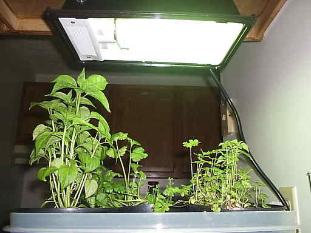
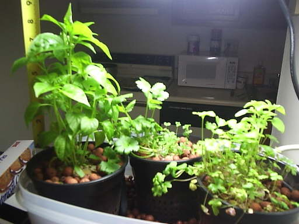

growing herbs hydroponically
I decided I wanted to grow some fresh herbs in my kitchen, and to do
that, a small hydroponic garden would be the best choice.
An Ebb and Flow system would be best for this sort of garden since it
would have a small footprint on my counter, require few parts, and could
easily be controlled with an X10 module and a cronjob.
The garden consists of two tupperware containers, one sitting on top of
the other. The bottom container is the reservoir, holding the nutrient
solution, and the top container holds the flower pots with the herbs in
them. An aquarium pump sits inside the bottom container and when
switched on, it pumps the solution up into the top container, filling it
up. The water cannot overflow because there is an emergency drain tube
in the top container preventing water from raising above it. When the
pump turns off, the water drains back down into the reservoir. The
black bag you see covering the bottom container is there to prevent
algae from growing in the nutrient solution. I am using two 18"
flourecent grow lights mounted under the cabinets above the garden.


progress
Sun Jan 25 19:00:21 -0500 2009
Planted the seeds.
Wed Jan 28 19:01:14 -0500 2009
Two pots started to sprout.
Wed Jan 28 19:26:22 -0500 2009
Set cycle time to every 8 hours.
Mon Feb 02 20:35:10 -0500 2009
A second sprout appeared in pot A, right under the first one. A sprout
in pot B is just starting to poke out through the rockwool. All the
little sprouts in pot C are still growing well and getting bigger.
The tallest sprout in pot A is 1/2", and the tallest sprout in pot C is 3/4"
Wed Feb 04 19:36:18 -0500 2009
New sprouts popped up in pot A. Several sprouts emerged from pot B,
being around 1" tall. Sprouts in pot C are still doing well.
Tue Feb 10 11:32:19 -0500 2009
Changed the water today. The new solution is only half strength. All
plants have sprouted.
Sat Feb 28 23:16:26 -0500 2009
I added a little more water to the solution so that it filled up all the
way. The parsely looks pretty bad, I think from planting too many too
close to each other, but I think it’s going to recover. The flourescent
lights I’m using are fairly useless. The cilantro all fell over on
itself, but seems to be doing pretty well despite that.

Thu Mar 05 20:11:50 -0500 2009
Changed the water.
Sat Mar 07 02:07:50 -0500 2009
Got a 65 watt Fluorex light today. It has a color of 6500 K, and puts
out 6825 brightness lumens and 4550 photopic lumens. It’s a lot
brighter than the two 18" fluorescents I was using so the plants should
like it.


Sun Mar 08 23:54:12 -0400 2009
I pruned the very tops of the pepper plants today in order to promote
branching.
Mon Mar 09 11:19:14 -0400 2009
The young, new leaves on the tops of the pepper plant and oregano(?) are
starting to curl up some on themselves. The new light might be a little
intense as close as it is, so I’m going to start turning it off for
about seven hours a day while I sleep.
© 2009 doug | generated by webgen | last modified at Sun Mar 01 00:42:27 -0500 2009